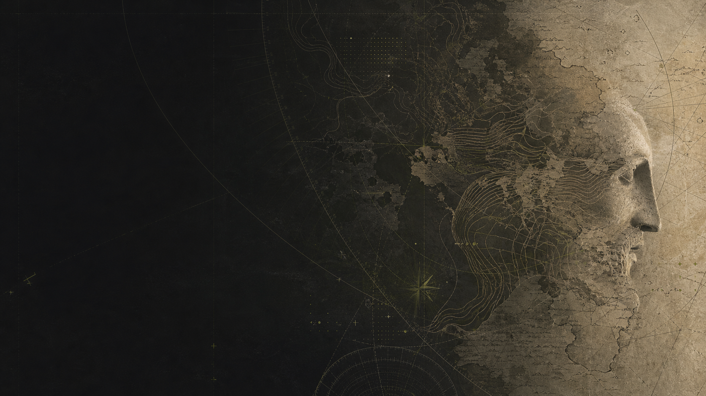

Comprender.
Miramos debajo de la superficie.
ESTUDIO INDEPENDIENTE · EST. 2024
La creatividad empieza cuando entendés por qué las cosas funcionan.

CAPA_0101 / 04
SCROLL ↓Miramos debajo de la superficie.
Usamos las reglas a nuestro favor.
Construimos la siguiente versión.
02 / EL LABORATORIO
03 / MANIFIESTO
No nos interesa pelear contra el sistema.
Nos interesa conocerlo lo suficiente
como para afinarlo.
OnlyFunPeople Studios crea videojuegos, herramientas y experiencias para el Zeitgeist de ahora.
ÚLTIMO REGISTRO / 28.07.26
El caos no es la ausencia de reglas.
Es una invitación a encontrar las correctas.